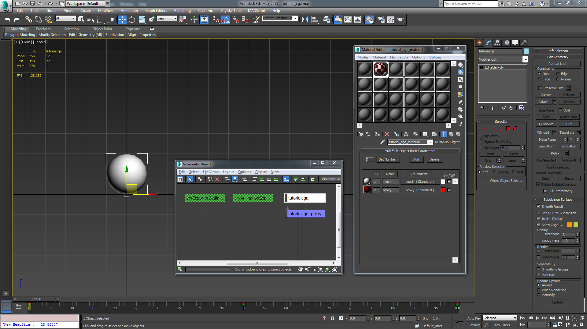
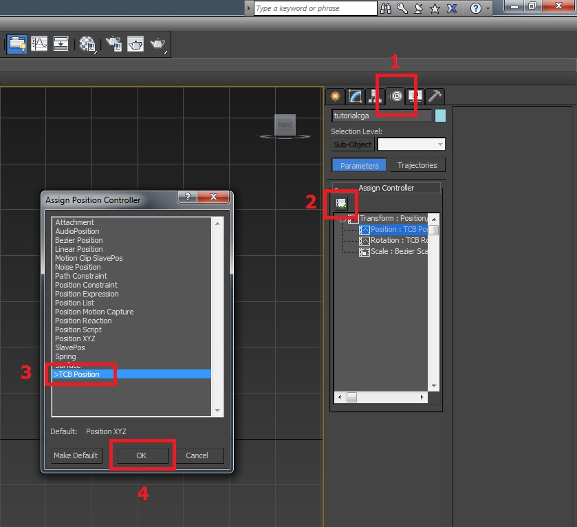
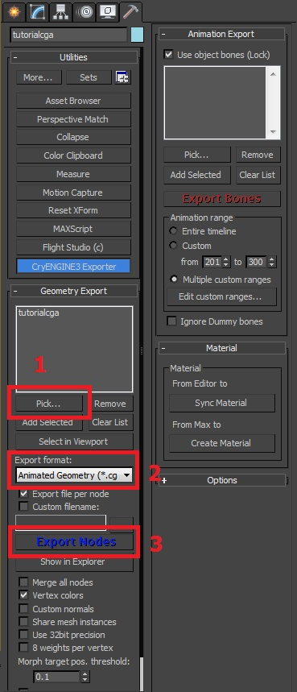
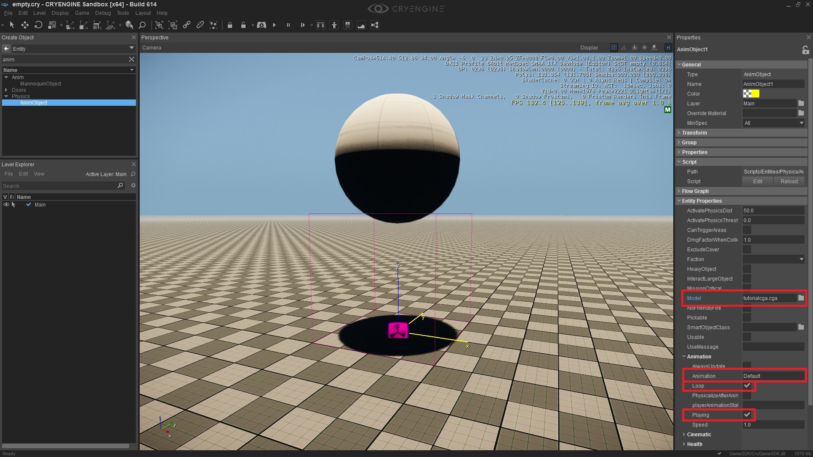
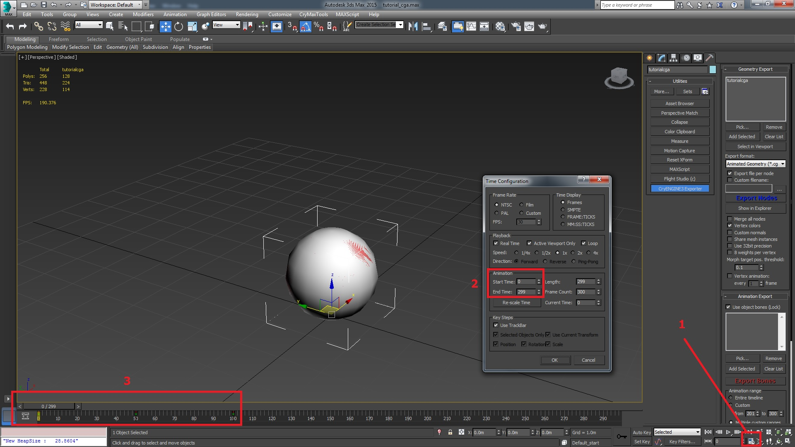
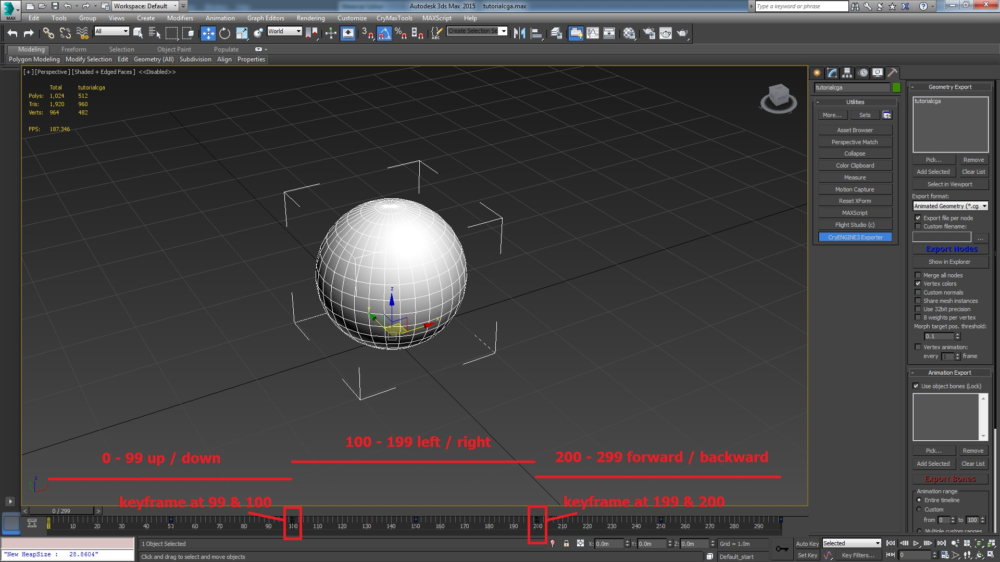
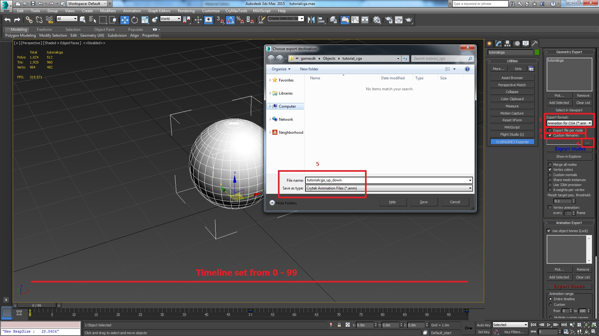
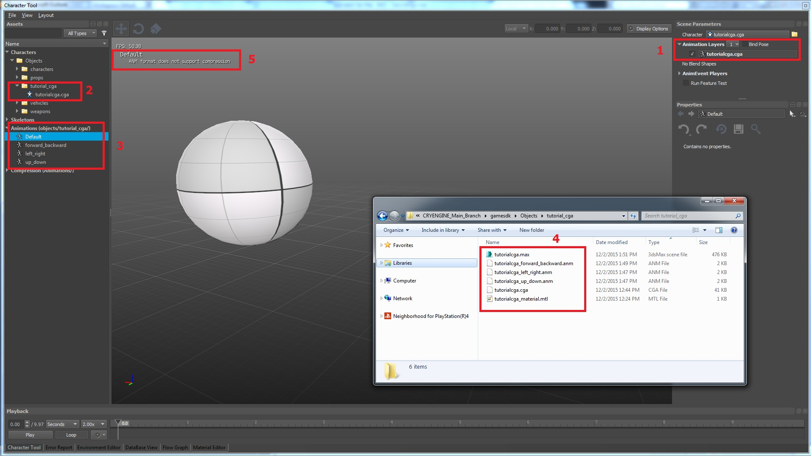
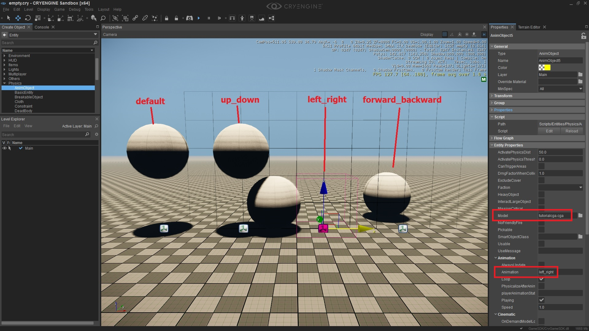

This tutorial takes you through the process of getting a *.cga into the engine. This will cover the 3ds Max pipeline, covering the basic *.cga with its default single animation (which has its use cases) up to exporting out a *.cga with multiple animations. In general the export workflow for a single animation *.cga and standard non-animated *.cgf only differs by choosing the export file format in the CRYENGINE Exporter.
This tutorial may rely on the GameSDK Sample Project. We recommend that you download this from the Asset Database, import it into your Launcher, start it from there and then create a new level.
See this page to find out how to import a project to your Launcher. (The default folder for the GameSDK Sample Project when downloaded is C:\Program Files (x86)\Crytek\CRYENGINE Launcher\Crytek\gamesdk_<XXX>\GameSDK)
Tutorial Files
Source 3ds Max scene with exported CRYENGINE files:
YOUR_PROJECT_FOLDER\Assets.Rules for CGAs and Exporting Animations
- Transform controllers must be converted to tension-continuity-bias (TCB) for both position and rotation tracks.
- If you have any List controllers, for e.g. "Position_List" or "Rotation_List", then you must collapse them by baking the result of the List controllers.
NOTE: You still need to convert the resulting bake to TCB_Position and TCB_Rotation controller as the very last step. - *.cga animations (*.anm) do not support compression!
- If the object only requires 1 animation this will be stored within the *.cga file as the Default animation.
- The Default animation will be the entire timeline.
- Multiple animations for the same object must be saved and exported out as *.anm files. These have to follow a strict naming convention:
- They must be prefixed with the *.cga's name
Correct: hmmwv_door_left_front_enter.anm
Incorrect: door_left_front_enter.anm
- They must be prefixed with the *.cga's name
- The first underscore within the filename denotes the start of the animation name in the engine.
- Inside the Character Tool, when previewing the *.cga's animation(s) only the animation name is shown and not the entire filename.
Pic1: Note the filename difference between the actual filename in the *.pak file vs. what's seen in the Character Tool
Prerequisites for this Tutorial
Before you continue with this tutorial, make sure to have read and understood the following:
Setup for a Single Animation CGA
Set up your 3ds Max scene and save it to an appropriate directory, for example: YOUR_PROJECT_FOLDER\Assets\Objects\tutorial_cga.
Very important! You can use underscores in the folder structure and in the filename of the animation, however the Exporter works in such a way that it looks for the first "_" in the animation filename. After that, then everything else is considered as the animation name. See above for example filenames under the 'Rules for CGA's and Exporting Animations' section at the top of this page.
We recommend:
- To avoid using underscores for a consistent look to your *.cga and *.anm (*.cga animation file type) naming convention.
- To not use spaces in filenames.
Object Setup
For this tutorial we will use a simple ball as the content. Configure the object properly with a material, a proxy as well as the visible render mesh.
Pic2: 3ds Max hierarchy and material setup 
Export out your object as a standard *.cgf. This is done to make sure that your Exporter is configured correctly. In the Editor add your exported object (*.cgf) as a brush to an empty level (Create Object -> Brush -> your directory).
NOTE: Hit the refresh button if it isn't there. By dragging the object into the scene, you can check if it's working. You can then delete this *.cgf - remember that it is used to test if the scene and the Exporter are working correctly.
Object Motion Controller Conversion
The first thing you must do is to make the object work and behave as an animated object (*.cga).
From within 3ds Max convert the controllers from the default Euler to the TCB controller. NOTE: This is a very important step because if it is not done, then no animations will play on the object.
Pic3: Controller conversion in 3ds Max 
With the object selected:
- Select the Motion option (4th tab).
- Under the Assign Controller menu (you may have to open it first if it's collapsed) select Position: TCB Position and then click on the Assign Controller button (highlighted).
- This will open the Assign Position Controller dialog box. Select the TCB Position option from the list of available controllers.
- Click OK to assign the controller.
- Repeat steps 1 - 4 for the Rotation and to convert to TCB.
Notice that now (underneath the Transform parent), both Position and Rotation have TCB next to their names.
Now would be a good time to save (File -> Save).
Adding Some Animation
Now that the object is correctly configured to be a *.cga you can add some animation to it.
Within 3ds Max and using the default timeline of 0 - 100 frames, at frame 50 move the object up 2m and at frame 100 move it back to zero. (This creates a looping animation of the ball going up and down).
Ensure that your Reference Coordinate System in 3ds Max is set to World when changing values through text input.
To test the other controller add some rotation to the object.
At frame 50 rotate the model by 90 degrees around the Z axis and at frame 100 rotate the model back again to 0 degrees - this returns the object back to the same angle that frame 0 is set at.
You should now have 3 keyframes at 0, 50 and 100 on the timeline. Cycle your animation back and forth to test that it's working and setup correctly.
Make sure that you have Auto Key enabled to record your animation.
Exporting
You now have your object configured for TCB controllers and an animation added to the timeline, so you are now ready to export.
Select the CRYENGINE Exporter.
Pic4: 3ds Max Exporter 
- Select the object in the scene and pick the root object to the Exporter's list (in this case "tutorialcga"). (Not the proxy)!
- In the drop down menu below this, you need to change the file type from *.cgf (static brush) to *.cga (animated object).
- Click on Export Nodes to create the object.
Checking the Object in the Editor
Open your Level or create a new one.
In the Create Object tool, click the Entity button and then expand the Physics option. Select the AnimObject option and drag it into the viewport. By default it is assigned a windsock model.
Pic5: Adding an AnimObject to the Level
To change the model to the object that you have just created go to the Entity Properties menu. One of the options available is a field called Model. Here, you can browse to the folder where you have saved the new *.cga (and select it). NOTE: Further down the property tree under the Animation menu is the Animation option which is preset to the Default animation.
It could be that the windsock model is fluttering in your Level. If so, then this is because it is playing its default animation. Once you swap out the source model of the Entity to be your new model then it should automatically play the bouncing ball loop.
Pic6: AnimObjects - model and animation paths
Final Results
Pic7: AnimObject using the newly exported *.cga 
As you can see in the above screenshot we have the AnimObject Entity using the exported *.cga. Also highlighted in the screenshot is the model path that links to your object (objects\tutorial\tutorial_cga\tutorialcga.cga). Loop and Playing are also ticked - this gives you instant play feedback of the animation.
NOTE: The play speed can be set to a different value.
A play speed of 1 is the exact speed of the animation as setup in the 3ds Max scene. A play speed of 0.5 will play at 1/2 speed while a play speed of 2 will play at twice the speed.
NOTE: In the screenshot above the bounding box is highlighted. This shows the default position of the object. However, as the object is currently 1/2 way through the animation it is shown outside of the bounding box.
Flow Graph
Sometimes having an object looping an animation at the start is not the behavior you require. Maybe you want the animation to only trigger when a certain event happens. In these situations the Flow Graph tool is used to control this type of interaction.
Preparation: In the Create Objects tool, go to the Entity button, expand the Physics option and then double click on the AnimObject menu option and drag into your scene. In Entity Properties, under the Animation menu, un-tick the Playing checkbox.
If you want your animation to be a 'one-shot' animation, then you should also un-tick the Loop checkbox. However, in our example once triggered we want it to play continuously.
In respect to the next part of this tutorial it is assumed that you have some basic knowledge of the Flow Graph tool and can add objects and link them together.
Pic8: Flow Graph used to trigger an animation on an AnimObject
- Create a Flow Graph, either directly on the Entity or on another object. (It doesn't matter where you store it).
- Having the "AnimObject" selected, right click inside the Flow Graph and Add Selected Entity.
- Add the 3 preceding nodes (Game:Start, Time:Delay, Logic:Any) and connect them as you see above.
- Finally, add the Debug:InputKey and assign a key to it. This is so you can reset and re-trigger the animation whenever you want.
- Note how the InputKey also passes through the Logic:Any node. This is because you have to restart the animation when you reset it. If not, it will reset the animation, but not trigger it again.
The delay node (with a 3 second delay) is set that way so as to avoid triggering as soon as you jump in game. This can be replaced with a Proximity Trigger or once a certain value has been met within a game token. How you want the trigger logic to operate is of course entirely up to you (we have used just one example here).
Setup for Multiple Animations on a Single CGA
So far we have only been using the *.cga with the default animation. Sometimes this is all you need - a single animation on the object. However, you can go a lot further with *.cga objects. For example, the vehicles shipped in CRYENGINE are also *.cga objects. The HMMWV for example has several animations for the opening and closing of the doors.
To handle these multiple animations on a single object you have to slightly modify the workflow.
The first change is that you can no longer us the "Default" animation - this is because the default animation reads the entire timeline that was setup within the 3ds Max scene. So, in the case of the HMMWV you would run through a very long sequence of all the doors opening and closing as they replay the timeline in full.
Extend the Timeline
In the timeline (along the bottom of the UI in 3ds Max) the timeline length is the default 0 - 100 frames. To change this click on the Time Configuration button.
Pic9: Timeline modification 
- Open the Time Configuration dialog.
- Change the end time to 299. (Since frames are counted from 0 then this equals 300 frames exactly). Then click OK.
- Notice that the original animation of the ball going up/down now only takes up a 1/3 of the timeline. (0 - 100).
- Shift the last keyframe to frame 99 from 100. (This gives you 100 frames in total for this first animation).
Setup the Next two Animations
In the first animation we made a ball bounce up/down, now we will populate the rest of the timeline with 2 further animations i.e. a left/right and forwards/backwards motion.
NOTE: 1: The entire timeline should have keyframes assigned to these new animations, 2: for consistency's sake always return the ball to the center start position and 3: use a frame range that is 100 frames long for each animation.
- (0 - 99) - Up/Down 2m
- (100 - 199) - Left/Right 2m
- (200 - 299) - Forwards/Backwards 2m
Pic10: Full time line with 3 animations 
Now with all the keyframes in place that cover the 3 separate animations, the entire timeline can be exported to replace the existing "Default" animation.
First restart the Editor and reopen the Level to see the AnimObject play the entire animation sequence i.e. up/down, left/right, forwards/backwards. This is now the default animation.
Changing the timeline length requires the Editor to be restarted. This enables the updated animation to be seen. Also, any modifications made to parameters such as keyframe additions, position updates, keyframes moved etc. mean that the exported *.cga or *.anm files will need the Editor to be restarted.
If changes are only made to the actual position or rotation (say move 4 meters rather than the original 2) then these changes will automatically update when re-exported.
To force these small updates, delete and undo the "AnimObject" in the Editor to refresh its settings - the updated animation will then play.
Splitting out the Other Animations
However, this isn't the setup we really want. What we want is the actual individual animations (up/down, left/right etc.)
In the timeline area, click the "Time Configuration" button. Set the range for the first animation (up/down) from 0 - 99. Your timeline should now only display this range.
Go to the CRYENGINE Exporter and underneath the export list (where you select the file type "*.cgf", "*.cga", "*.anm" etc.) and select "*.anm" as the filetype.
Pic11: Modified timeline length to only cover the range you want to export (0 - 99 frames) 
- From the dropdown list change the file type to *.anm
- Uncheck the Export file per node checkbox
- Check the Custom filename checkbox
- Click the ... button to open the Save as dialog box
- Assign a name to the animation. Name it sensibly and to represent the action it's doing (filenames have to follow a very specific format, see below)
- Export out the *.anm file. (Click the blue Export Nodes button)
- Repeat the same process for the second and third animation (frames 100 - 199 and 200 - 299)
Naming Convention
As mentioned above, the filename given to a *.cga's animation has to follow a specific format.
The key to this system is that the FIRST UNDERSCORE in the asset name is used as a signal to the Exporter that any text after the first underscore is the start of the animation name.
Hence, do not include underscores in the *.cga name.
Repeat Information: Do not use spaces in the filenames.
Example of the setup:
*.cga name UNDERSCORE name of your animation.
Example for this case:
tutorialcga_up_down or tutorialcga_left_right or tutorialcga_forward_backward.
So to recap on the rules:
- The *.cga name must come first (tutorialcga)
- The first underscore splits the asset name from the animation name
- Beyond this rule you can call your animation whatever you want
- Note the second underscore in the example. This is perfectly fine. Once the system has encountered the first underscore, then a further underscore isn't taken into account when splitting animation names from the asset
Testing the New ANM Files in the Character Tool
In the following screenshot the Character Tool is open, the asset (*.cga) selected and the available animations are on display.
Pic12: Character Tool showing the selected *.cga and the created animations that are associated with it 
- Object active and selected in the Character Tool
- Object selected again, but in the browser
- A list of the available animations for the *.cga that has been exported out (Default, up_down, left_right, forward_backwards)
- Shows you the Windows Explorer view of all the files created so far (Note the file names here vs. the file names in step 3)
- Reminder: The *.anm file format doesn't support compression!
Examples: Good vs. Bad
Good examples of an asset setup:
- tutorialcga_up_down - Will give you an animation called up_down
- tutorialcga_updown - Will give you an animation called updown
Bad examples of an asset setup:
- tutorial_cga_up_down - This *.anm will be represented in the Character Tool as "cga_up_down" (because of the underscore in the cga name)
- up_down - There is no link to the actual asset (via the prefixed *.cga name)
- tutorialcga up down - We do not support spaces in file names
Testing the New Animations on an AnimObject
So in your Level, you should have 1 AnimObject set up to play the default animation. Since we have just exported out 3 more different animations let's see if they are working correctly. Either duplicate the existing AnimObject or drag some new ones into the scene (like before, and repeat this for a total of 4 AnimObjects).
Under the Animation section in Entity Properties, (where the animation is pointing to Default), replace Default with the names of your animations (up_down, left_right, etc.) and as you see them written in the Character Tool. Providing you have followed the above steps you should now have 4 AnimObjects all using the same *.cga file (tutorialcga) and each one playing a different animation.
In the following screenshot there are 4 *.cga's lined up and where each one is playing a different animation. Highlighted is the 3rd AnimObject that shows the correct text format for assigning a different animation away from the default animation. (left_right).
Pic13: Final output, 4 AnimObjects using the same *.cga, playing 4 different animations 